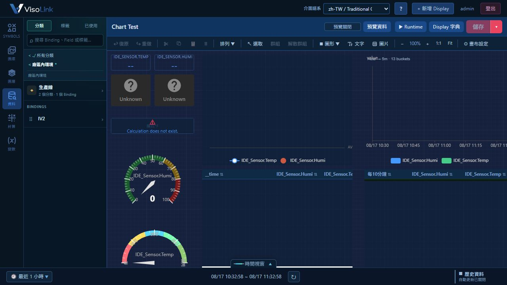
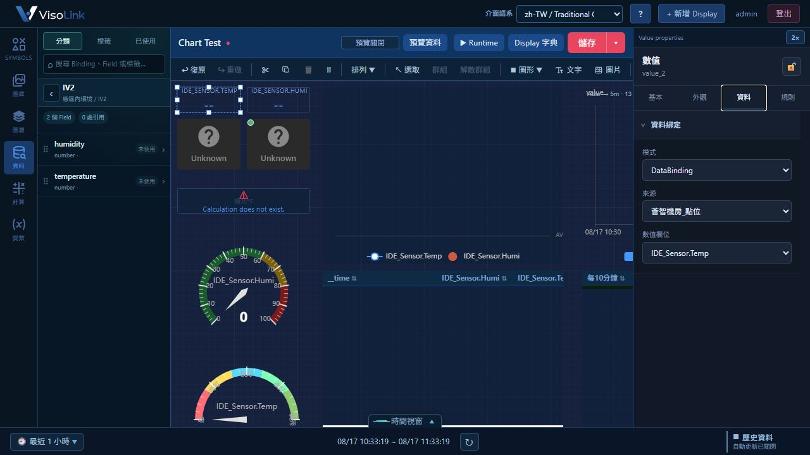
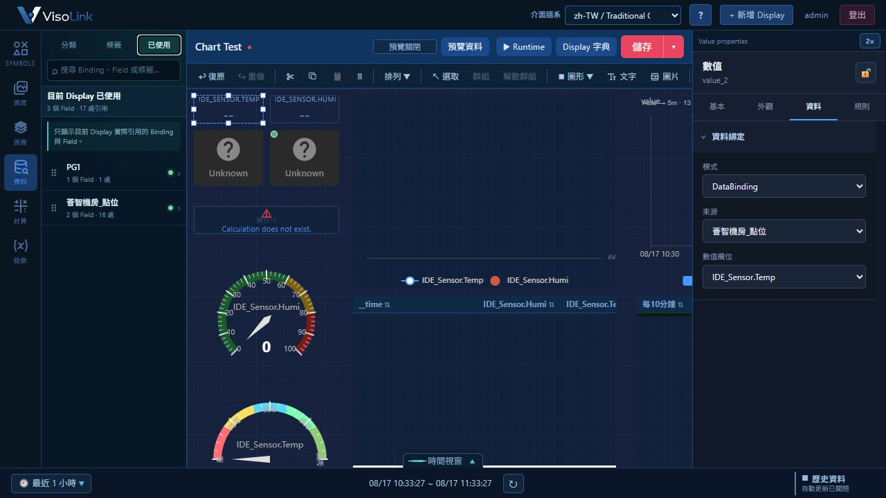

COURSE 03 · DATA
DataBinding
& DataBrowser
找到正確資料，建立可理解、可追蹤、可驗證的畫面綁定。
Studio 設計人員建議 90 分鐘先備：Course 02
LEARNING OUTCOMES
完成後，不只會選資料，還能證明選得正確
01理解結構
分辨 DataSource、View、DataBinding 與 Field 的關係。
02快速定位
使用分類、標籤、搜尋與已使用模式找到資料。
03建立綁定
以拖曳或屬性設定驅動數值、狀態與趨勢。
04完成除錯
依固定順序檢查型別、時間、權限及資料狀態。
DATA HIERARCHY
先知道每一層負責什麼
1DataSource平台與外部系統的連接
2View整理後可使用的資料集合
3DataBinding設計者可重用的資料定義
4Field實際綁定的欄位
5Symbol Property被資料驅動的畫面屬性
設計者的責任：從可用的 DataBinding 與 Field 建圖；若資料語意、單位或時間定義不清楚，應向資料管理者確認，不應自行猜測。
BROWSER MODES
同一批資料，可以用三種角度瀏覽
分類
依設備、區域或業務用途逐層縮小範圍；適合從工作情境出發。
標籤
依管理者設定的標籤組合尋找資料；適合跨分類的共同特性。
已使用
只顯示目前 Display 實際引用的 Binding、Field 與引用次數。
不知道正式名稱時先走分類；知道關鍵字時直接搜尋；維護既有畫面時先看「已使用」。
CATEGORY BROWSER
沿著現場語意逐層定位資料

分類層級、目前位置、子分類與 DataBinding 會在同一面板呈現。- 確認目前層級麵包屑顯示所在分類。
- 進入子分類依區域、產線或設備縮小範圍。
- 辨識 Binding名稱應對應清楚的資料用途。
- 返回上層找錯方向時回到共同分支。
SEARCH
搜尋的是 Binding、Field 或標籤，不只是畫面文字
01使用最小有效關鍵字
可由設備名稱、測點名稱或欄位語意開始。
查看完整所在路徑
同名 Field 可能存在於不同設備或資料來源。
確認資料責任
無法判斷時向管理者確認 View 與 Binding 定義。
常見錯誤：搜尋到 Temperature 就直接使用，卻沒有確認它屬於哪台設備、使用哪個單位或時間來源。
FIELD
進入 Binding 後，再選擇真正需要的 Field
 Field 清單會呈現名稱、型別及目前使用狀況。
Field 清單會呈現名稱、型別及目前使用狀況。- 確認 Field 名稱與業務意義
- 確認 number、text、boolean 或 date/time 等型別
- 確認即時值、歷史序列或計算結果的用途
- 查看是否已被目前 Display 引用
- 綁定前確認單位、小數及合理值域
DATA TYPES
資料型別會限制適合的 Symbol 與屬性
Number
數值、Gauge、Trend、門檻、聚合及計算。
Text
名稱、批號、說明與離散狀態文字。
Boolean
運轉／停止、開／關等二元狀態。
Date / Time
事件時間、資料時間與更新時間；需確認時區。
型別不匹配：不是把資料硬塞進元件，而是重新確認 Field、Symbol 或轉換邏輯是否選錯。
DRAG TO CREATE
拖曳提供快速起點，完成後仍需調整與驗證
1找到 Binding／Field核對路徑與語意
2拖曳至畫布在目標位置放開
3選擇／確認 Symbol依資料用途呈現
4調整屬性名稱、單位、格式與外觀
5預覽資料檢查結果與例外狀態
拖曳整個 DataBinding 與拖曳單一 Field 的結果可能不同；操作前先確認目前選取層級。
MANUAL BINDING
既有 Symbol 可從「資料」頁籤指定資料來源

數值 Symbol 範例：設定模式、來源 DataBinding 與數值欄位。- 模式無、靜態、DataBinding 或 Calculation。
- 來源選擇正確的 DataBinding。
- 欄位選擇實際驅動此屬性的 Field。
- 預覽載入資料後檢查顯示結果。
PROPERTY BINDING
資料不只驅動數值，也能驅動畫面行為
內容
文字、數值、標題、圖片來源或圖表序列。
外觀
顏色、透明度、邊框或其他可視樣式。
狀態
可見性、啟用狀態與多狀態切換。
時間資料
Trend、Table 及圖表的欄位、聚合與序列。
每一項綁定都要能回答：來源是什麼、更新時間是什麼、無資料時如何呈現。
USED IN DISPLAY
維護既有 Display 時，先盤點實際引用

「已使用」模式集中顯示目前 Display 引用的 Binding、Field 與引用次數。- 快速確認 Display 依賴哪些 Binding
- 比較引用 Field 數量及使用次數
- 找出準備修改的資料是否影響多個 Symbol
- 清理不再需要的綁定前先確認引用
- 與 Display 字典交叉檢查維護範圍
DISPLAY SAFELY
資料正確之外，也要避免例外狀態造成誤判
格式
小數位、千分位、日期與時間格式應符合使用情境。
單位
單位應與來源定義一致，不只在標題中自行補字。
空值
以「—」或明確文字表示未知，不以 0 取代。
無權限
安全隱藏資料並保留可辨識狀態，不顯示殘留值。
歷史資料注意：沒有剛好落在查詢時間點的值，不等於整段時間都沒有資料；需理解查詢與對齊方式。
TROUBLESHOOTING
依固定順序檢查，避免反覆重綁碰運氣
1Symbol選對物件與屬性？
2路徑Binding／Field 正確？
3型別資料與屬性相容？
4時間範圍內有資料？
5權限角色可讀取？
6來源資料持續更新？
回報內容Display、Symbol 名稱、Binding、Field、時間範圍、角色、畫面狀態及已完成的檢查步驟。
HANDS-ON ASSESSMENT
Course 03 實作任務
建立綁定
- 由指定分類找到 DataBinding
- 確認兩個 Field 的型別與用途
- 拖曳建立數值與 Trend
- 手動將狀態 Symbol 綁定至指定 Field
驗證與除錯
- 設定名稱、單位、小數與空值文字
- 使用「已使用」確認引用
- 驗證正常、無資料及無權限狀態
- 依六步驟排除一個錯誤綁定
通過標準能說明每個 Symbol 的 Binding、Field、型別、時間與例外呈現，且 Runtime 結果符合預期。
下一門：Calculation & Variables →